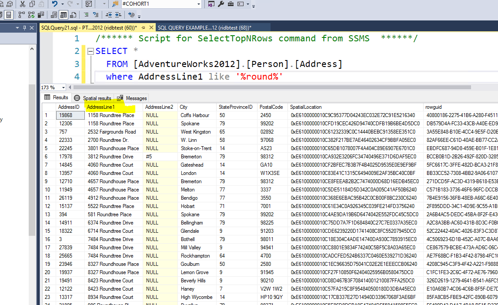
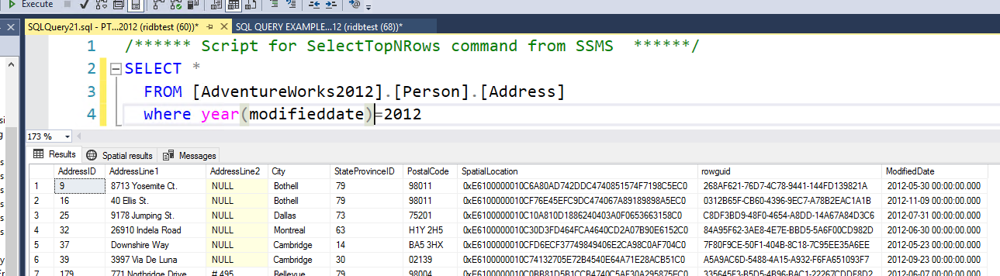
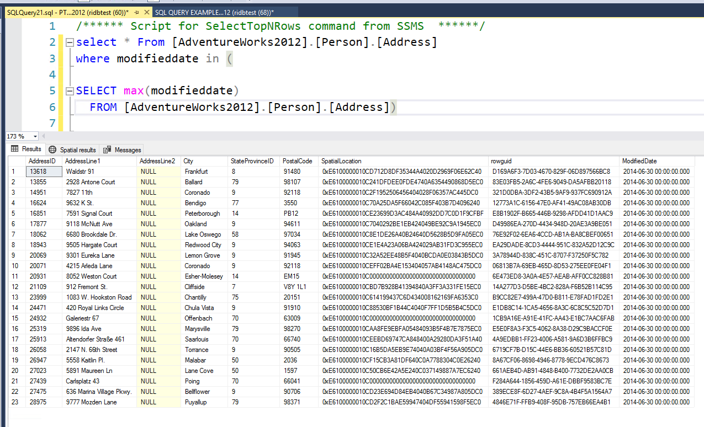

Building Basic SQL scripts
This page has some random examples of how we using commands , filters based on situations or requriments. We are quiering only one table [AdventureWorks2012].[Person].[Address]
You can simple scroll through to get a idea of how developers usually think to build scripts
Quering data from a table
Using Where clause on a certain Column Name
Checking how many distinct addressid's are present in this table
Chekcing for data where Addressline1 Field has the term 'Round' at any location

Checking for data where Addressline2 Column has data
Checking for records which were modified in year 2012

Using Order by , to order the records by Modifieddate Field
Check for the address which were modified the latest among all

Next Stop: Questions or Suggestions